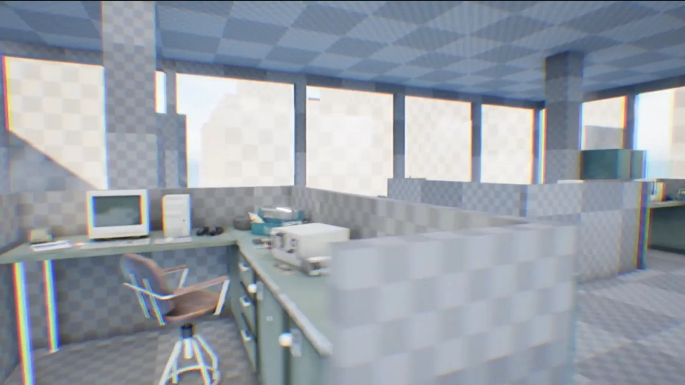

The Last Day.
Designer · Sound · Narrative
Team
4 people
Timeline
March 2026
A game about working an office job.

Screenshots
Next projectBiome Buyout
Designer · Sound · Narrative
4 people
March 2026
A game about working an office job.
